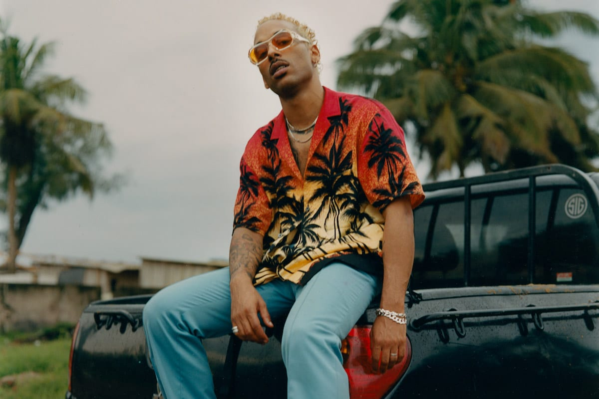

Laylow
Nom de scène de Jérémy Larroux, né le 12 mars 1993 à Toulouse, est un rappeur et chanteur français. Laylow est influencé par des artistes américains comme Ja rule ou G-Unit, dont le côté bling-bling l'impressionne dès l’enfance. Plus tard, Kanye West, Travis Scott et Yung Lean, le rap français lui venant après. Ses clips sont nourris par le style des vidéos diffusées sur MTV dans les années 2000, dont il apprécie les grands angles et les lumières vives. D'autre part, les interludes qui caractérisent ses derniers albums s'inspirent de celles de rappeurs qu'il écoutait plus jeune, tels que Dr. Dre et le Wu-Tang Clan.
Source